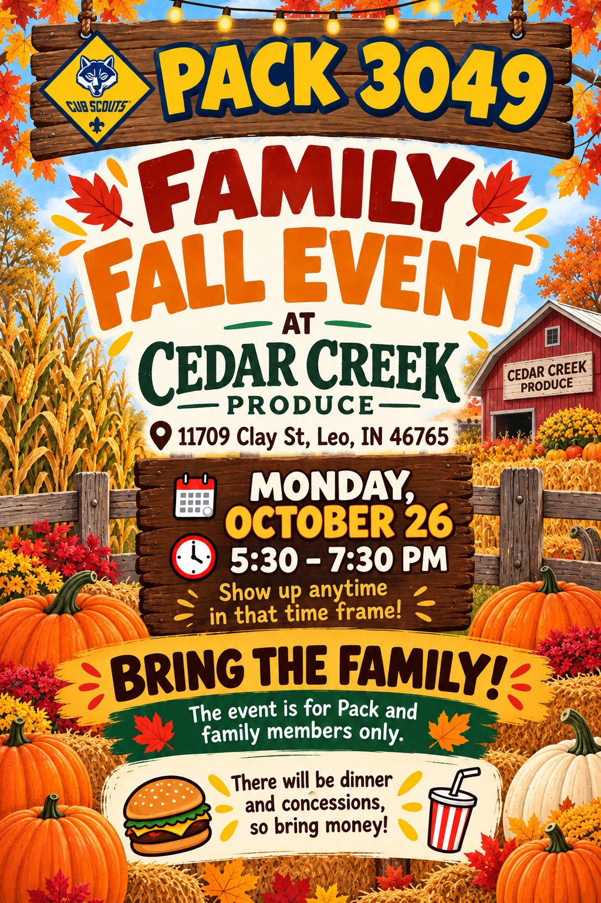
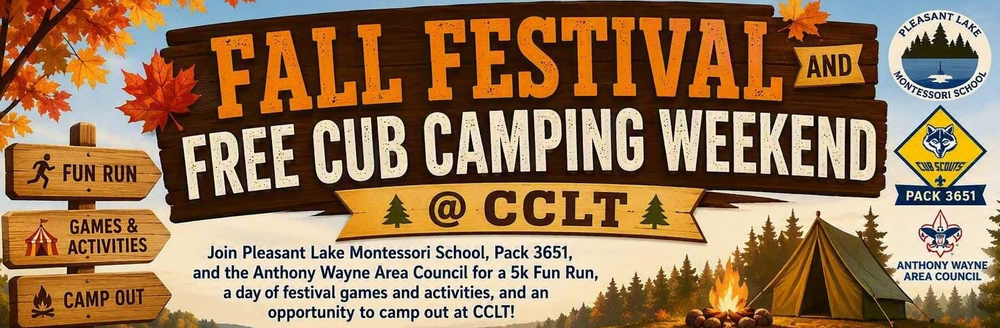

Cub Scout Pack 3049 Muddy boots. Big ideas. Every Monday.
Campfires, water rockets, pinewood cars that go way too fast, and 78 kids figuring out what they are capable of. Pack 3049 has been doing this in Leo for more than 90 years. Kindergarten through 5th grade, boys and girls, everybody welcome.
![Cub Scout Pack 3049 Upcoming Meetings flyer. Learn, serve, explore, grow. November 9: Cubservation, conservation and community service, with a 10 minute flag ceremony, 25 minutes for Lions, Tigers and Wolves with Metea, 25 minutes for Bears and Webelos with Metea, and 25 minutes of den specific choice; service with Metea, learn about Metea's community service opportunities and how our dens can get involved. November 16: Flag Respect and Etiquette, first 20 minutes flag ceremony and flag folding, afterward den specific choice. November 23: Monarch Butterfly Conservation, Champions for Nature, 10 minute flag ceremony and announcements introducing the Pinewood Derby; dens can use the day as a work day, a planning day, or to begin or continue a project; remaining time den specific. November 30: No Cub Scouts, extended Thanksgiving break; pack meeting is not held so leaders can spend time with family; this day can be added for your den to catch up on adventures. December 7: Camping Essentials, station rotation of hands on camping skills such as gear, setup and safety, then 15 to 20 minutes of den specific work. December 14: Arrow of Light Crossover and Awards, celebrate our Arrow of Light Scouts as they cross over to Scouts BSA and recognize Scout achievements and awards.](images/upcoming-meetings-2026-11.jpg)
The next six Mondays
Every meeting is at Cedar Creek Church at 6:30 PM unless BAND says otherwise. Here is what each night is about, so you know what your Scout is walking into.
| Date | Theme | What happens |
|---|---|---|
| Nov 9 | Cubservation Conservation and community service | Flag ceremony, then Metea County Park leads two sessions: Lions, Tigers and Wolves first, Bears and Webelos second. Learn about Metea's service opportunities and how our dens can get involved. Dens finish with their own choice. |
| Nov 16 | Flag Respect and Etiquette | First 20 minutes: flag ceremony and flag folding. Then den specific choice. Watch BAND for the location. |
| Nov 23 | Monarch Butterfly Conservation Champions for Nature, pack meeting | Flag ceremony and announcements, including the first word on the Pinewood Derby. Dens choose a work day, a planning day, or start a habitat project. Also the last day of the popcorn sale. |
| Nov 30 | No Cub Scouts Extended Thanksgiving break | No pack meeting, so leaders can be with family. A den may use the night to catch up on adventures; your den leader will say if yours is meeting. |
| Dec 7 | Camping Essentials | Three hands on stations, 10 minutes each: knot tying, a tent setup race, and s'mores with fire safety (an adult leader lights and tends the fire). Then 15 to 20 minutes of den work on the Camping Adventure. See the station plan. |
| Dec 14 | Arrow of Light Crossover and Awards Pack meeting | Celebrate our Arrow of Light Scouts as they cross over to Scouts BSA, and recognize the fall's achievements and awards. Bring the whole family. |
How the December 7 night runs
Camping Essentials is a 30 minute rotation through three stations, about 10 minutes each, with Scouts split into three groups. Younger Scouts pair with an older buddy at the knot station. Only adults handle the fire, and it is not out until it is cool to the touch. Dress for a cold night: hats, gloves, warm layers.
1. Knot tying
A square knot and a bowline with thick rope, demonstrated slowly, then tried. Ages 5 to 7 do the square knot with an older buddy. Finish with a challenge: tie the square knot on your own.
2. Tent setup race
A small tent laid out flat. The group raises it together, stakes the corners, and gets timed from flat to standing. Collapse, reset, and the next group tries to beat the time. Cheer teamwork, not just speed.
3. S'mores and fire safety
Fire lit and tended by an adult leader; Scouts stay outside the ring. Walk, never run, keep back, and practise stop, drop and roll. S'mores from pre packed kits, adults roast for the youngest. Wrappers in the trash bag.
![Camping Rotations plan for the Cub Scout pack meeting, ages 5 to 11, December, 30 minutes across 3 stations. Timeline: 0 to 2 minutes welcome, explain the 3 stations and split into 3 groups; 2 to 12 rotation 1, each group at its first station; 12 to 22 rotation 2, rotate on the whistle or timer; 22 to 30 rotation 3, ending with a 2 minute wrap up. Station 1, Knot Tying, 10 minutes: demo a square knot and a bowline with thick rope, hand out rope and let Scouts try both, younger Scouts ages 5 to 7 do just the square knot paired with an older buddy, finish with a challenge to tie the square knot correctly on your own; leader tip, thick rope is much easier for little hands than paracord or string. Station 2, Tent Setup Race: start with a small pop up or 2 person tent laid out flat, the group clips or threads the poles, raises the tent and stakes the corners, time the group from start to standing tent, collapse, reset and let the next group try to beat the time; leader tip, keep it fun not competitive, cheer fast teamwork. Station 3, Campfire S'mores and Fire Safety: fire ready on arrival and an adult leader lights and tends it, Scouts stay outside the fire ring; fire safety first, walk never run, keep back, practise stop drop and roll; make s'mores from pre packed kits, adults roast for the youngest, older Scouts use long sticks one at a time; eat together and all wrappers go in the trash bag; leader tip, cold night, hats, gloves, warm layers, water bucket by the fire to put it out at the end. Supply list: thick rope, 3 lengths per group; 1 small tent per group or 1 tent shared with a timer; tent poles and stakes, complete set; graham crackers, chocolate, marshmallows, 1 kit per Scout; long roasting sticks, 1 per Scout, plus plates, napkins, trash bag; timer or whistle; station signs optional; firewood and lighter, adults only, plus bucket of water. Wrap up, last 2 minutes: ask what was hardest, ask what you would do differently on a real campout, remind everyone only adults manage the fire and it is not out until it is cool to the touch.](images/camping-rotations-2026-12-07.jpg)
![Cub Scout Pack 3049 Needs You flyer. Help keep Pack 3049 strong, active and full of adventure. We are looking for dedicated volunteers to fill key leadership and support roles. Open volunteer positions: Popcorn Kernel and Assistant Popcorn Kernel, lead and support our annual popcorn fundraiser, coordinate with council, manage orders and inventory, and help Scouts reach their goals. Committee Chair, lead the pack committee, run meetings, and ensure the pack has the support, planning and resources it needs. Co-Cubmaster, share leadership of the pack program with the Cubmaster, be the first to events, plan the schedule, and lead pack meetings and other activities. Pack Trainer, ensure leaders and committee members complete all required training, track training status, and help new volunteers get started. Assistant Treasurer, provide continuity and financial oversight by supporting the Treasurer with records, payments, reimbursements and financial reporting. Advancement Coordinator, enter advancements into Scoutbook, order awards from council, and organize award distribution. Pinewood Derby Coordinator, plan and run the pack's Pinewood Derby, manage car registration and rules, organize the race and equipment such as track and timing, recruit volunteers, and coordinate awards. Other activity specific volunteers, help lead and organize special events and activities throughout the year such as camping, hiking, service projects, Blue and Gold, community events and more. Interested? Contact Nicole Howard, Co-Cubmaster, howardfamily411@gmail.com.](images/volunteer-roles-2026.jpg)
Open volunteer roles, and why they matter
Everything this pack does, from popcorn to the Pinewood Derby, is run by parents who said yes. Several key roles are open right now. None of them require Scouting experience, all of them come with help getting started, and most are shared jobs.
Popcorn Kernel and Assistant Kernel
Lead or support the annual popcorn fundraiser: coordinate with council, manage orders and inventory, and help Scouts reach their goals.
Committee Chair
Lead the pack committee, run the monthly meeting, and make sure the pack has the support, planning and resources it needs.
Co-Cubmaster
Share leadership of the pack program with the Cubmaster: be the first to events, plan the schedule, and lead pack meetings and activities.
Pack Trainer
Make sure leaders and committee members complete required training, track training status, and help new volunteers get started.
Assistant Treasurer
Provide continuity and oversight by supporting the Treasurer with records, payments, reimbursements and financial reporting.
Advancement Coordinator
Enter advancements into Scoutbook, order awards from council, and organize award distribution.
Pinewood Derby Coordinator
Plan and run the pack's Pinewood Derby: car registration and rules, the race itself, track and timing equipment, volunteers and awards.
Activity volunteers
Help lead and organize special events through the year: camping, hiking, service projects, Blue and Gold, community events and more.
Interested, or just curious what a role involves? Contact Nicole Howard, Co-Cubmaster, at howardfamily411@gmail.com, or grab any leader on a Monday night. Saying "tell me more" does not commit you to anything.
Family Fall Event at Cedar Creek Produce
The October pack meeting moves to the farm. Pumpkins, hay, dinner from the concession stand, and the whole family is invited. Come any time between 5:30 and 7:30, stay as long as you like.
Different time, different place. This is 5:30, not 6:30, and it is at the farm on Clay Street, not the church. It replaces the October 26 pack meeting.
Dinner and concessions
| Item | Price |
|---|---|
| Hot dog | $3.00 |
| Chili dog | $4.00 |
| Bowl of chili | $4.00 |
| Walking taco | $3.50 |
| Pumpkin muffin | $2.00 |
| Popcorn | $1.00 |
| Chips | $1.00 |
| Drinks | $1.00 |
Allergy note. The chili and the pumpkin muffins are home made by a pack family, not commercially produced. The chili contains beef, onion, pinto and red beans, tomato, beef broth, honey and spices. The muffins contain flour, sugar, squash, oil, eggs, cinnamon, nutmeg, allspice, baking soda and salt. Honey means the chili is not for children under one year old.


![Concessions menu. Hot dog 3 dollars, chili dog 4 dollars, bowl of chili 4 dollars, walking taco 3 dollars 50, pumpkin muffin 2 dollars, popcorn 1 dollar, chips 1 dollar, drinks 1 dollar. Notice: the pumpkin muffins and chili are home produced and processed and the production area has not been inspected by the state department of health, not for resale. Pumpkin muffins contain flour, sugar, squash, oil, eggs, water, cinnamon, nutmeg, allspice, baking soda, salt. Chili contains beef, onion, pinto beans, red beans, tomato, beef broth, honey, spices.](images/family-fall-event-concessions-2026.jpg)
$42,000 sold, five weekends to go, and one thing we have not explained well
Our Scouts have put in real work and it shows. Here is where the sale stands and what to do at the next few Monday meetings.
Every Monday is a swap, not a pickup
Every Monday of the sale is a two way exchange. Bring back what is not selling, take what you actually need for the week ahead. Product in, product out, every week, all the way to the end.
Nobody needs a month of inventory in their garage. Take what you can move this weekend, bring the rest back Monday, pick up something different if that is what people are buying. Families who swap every week sell more and carry far less risk than families holding the same boxes since September. This is how the sale is meant to run.
Tonight, Monday October 19, is the important one. It is the last Monday unsold popcorn can go back to the council. After this week, anything returned belongs to the pack and we pay for it, which takes money away from camp, awards and activities. If you are holding popcorn you are not going to sell, bring it tonight.
If you have October 23 on your calendar, that is the council's deadline on their end, and it is why everything has to be in hand tonight.
So what should you bring?
- Still selling? Keep what you are working and swap out what is not moving. There are five more weekends. Do not send back product you are going to sell.
- Done selling? Bring back what is unopened and in good condition. Not all of it, only what you honestly are not going to move.
The sale runs through Monday, November 23, the Monday of Thanksgiving week. There is still a month of selling, so there is no reason to wrap up early.
Popcorn does not cover registration
Two separate things, and this trips people up every year. Registration is $100 per Scout, per year, for the membership year that runs August through April. Every family pays it no matter how much popcorn their Scout sells. It goes to Scouting America and the council, not to the pack.
Popcorn pays for everything else: about $222 per Scout of programming, plus the council and national fees your $100 does not cover. A Scout year truly costs about $376. You pay $100. Popcorn closes the gap.
The goal, in two parts
To be whole for the year, each family does both. Not one or the other.
How the buyout works
If your Scout sells nothing, the buyout is $300. Every dollar sold brings that down, and it reaches zero at $525. You are never choosing between selling and paying. Whatever you sell counts, and you only write a check for the part you did not get to.
| Sold | Buyout owed |
|---|---|
| $0 | $300 |
| $175 | about $200 |
| $350 | about $100 |
| $525 | $0 |
Order form sales, storefront shifts, online orders and donations all credit the same. The pack earns 38 cents on every dollar, which is the money that funds the program.
Questions? Your den leader first. They can handle most of it or get an answer quickly. For anything more complicated, find the popcorn kernel in the parking lot on a Monday.
![Cub Scout popcorn update flyer. As a pack we have sold about 42,000 dollars with five weekends to go. Mondays are a swap, not a pickup. This Monday, October 19, is the important one: all returns and exchanges happen at the den meeting, the last Monday unsold popcorn can go back to council. What to bring: still selling, keep what is moving; done selling, bring back what is unopened. The sale continues through Monday November 23. Popcorn does not cover the 100 dollar registration. Popcorn pays for everything else, about 222 dollars per Scout of programming. The goal: 100 dollar registration plus 525 dollars in sales or the buyout, settled by December 1. Buyout table from 300 dollars at zero sales to zero at 525. Everything counts. The pack earns 38 cents on every dollar. Check your number with the buyout calculator at pack3049.com.](images/popcorn-update-2026-10-18.jpg)
Extra Scouting this winter, for families who want more
The Anthony Wayne Area Council runs a few programs of its own over the winter. These are not Pack 3049 events and nobody is expected to go. Our Monday den and pack meetings carry on as usual. If your family is looking for a little more Scouting, here are the options. Sign up with the council directly, not through the pack.
Christmas at Camp
Three weekends to pick from: December 4 to 5, December 11 to 12, or December 18 to 19. Each runs 7:00 PM Friday to 9:00 PM Saturday, overnight at the council's camp.
Anthony Wayne Reservation, 2282 W 500 S, Pleasant Lake, IN 46779.
The council has not yet posted the cost or program details. Check the listing before you plan on it.
Pinewood Derby Car Cut-out Day
Saturday, January 9, 9:00 AM to 1:00 PM at the AWAC Training Center, 8315 W Jefferson Blvd, Fort Wayne.
Council volunteers bring the saws and sanders and help Scouts rough cut and shape their derby car, with tips on finishing, paint, wheels and weights. A good option if you do not have tools at home. Our own pack Pinewood Derby is in the spring; this is just a head start on the car.
Both are also on the schedule page, marked "Council event, optional" so they are easy to tell apart from pack events.
Fall Festival and free Cub camping at CCLT
Pleasant Lake Montessori School, Pack 3651 and the Anthony Wayne Area Council are putting on a festival day at camp, and the camping that night is free for every AWAC pack. That includes us.


Fall Festival, Saturday 10:00 AM to 2:00 PM
- Carnival games and food, classic games and autumn treats
- Archery, fishing and slingshots
- Bounce houses
- Silent auction, prizes and local goods
Stay the night, Saturday 3:00 PM to Sunday 11:00 AM
Bring everything. Packs and families provide all their own meals and all their own equipment. Tents, bedding, food, cooking gear, the lot. Nothing is provided and there is no dining hall for this one.
If your Scout has never camped with the pack, this is a good first one. It is one night, it is free, and it is on a camp they will already know from summer.
Family Fun Run, Saturday morning
What Cub Scouts actually looks like
Most weeks your Scout meets with their den, a small group of kids in the same grade. They build something, play a purposeful game, learn a skill, and work on an adventure toward their rank. It takes about an hour.
Once a month the whole pack gets together with families for a pack meeting: skits, awards, a theme, and a lot of noise. Between those, we hike, camp, race cars, tour the fire station, launch water rockets, and hand out more than a few pies to the face.
Scouting is a family program. Parents are not dropping kids off and leaving. You will be right there, and that is most of the point.
Where and when we meet
Den meetings: Mondays, 6:30 to 7:30 PM
Pack meetings: one Monday a month, 6:30 to 8:00 PM
Committee meetings: Thursdays at 7:00 PM, all adults welcome
Cedar Creek Church
12606 Leo Road, Fort Wayne, IN 46845
Dens usually meet two to three times a month. The pack takes off for school breaks and most holidays.
Find your den
Every Scout joins the den that matches the grade they are entering. Each rank has its own handbook, its own adventures, and its own patch to sew on.
Short meetings, a grown up at every one, and a whole lot of firsts.
Exploring the neighborhood and meeting the people who run it.
Outdoor skills, and the first real taste of doing it themselves.
Tools, camp cooking, critters. Bears run the pumpkin contest.
Camping gets serious and Scouts start running things themselves.
The highest Cub Scout rank, and the bridge into a Scouts BSA troop.
The STEM is the fun part
Nobody in this pack calls it STEM. They call it launching a bottle rocket over the parking lot, or figuring out why the fast car is fast. Same thing.
Water rockets and launch day
Air pressure, fins, water volume, and a lot of arguing about whose design goes higher. Then they change one variable and try again. That is an experiment, and they never notice.
Pinewood Derby physics
A block of pine, four wheels, and a hard cap on weight. Scouts learn about friction, mass, and center of gravity by losing a heat and figuring out why.
Nature, up close
Tracks in the mud at Metea Park, water bugs in a creek, constellations from the campsite. Field science, done in the field.
Build it and use it
Knots that hold, fires that light, a pocket knife used correctly, a meal cooked over coals. Practical engineering with immediate consequences.
Nova awards
Scouting America's own STEM program. Scouts who want to go deeper earn Nova awards in science, technology, engineering, and math.
Fix the thing that broke
Tents in the wind, a wheel that wobbles, a plan that fell apart at 9 PM. Troubleshooting under real pressure is the most underrated skill Scouting teaches.
What they actually walk away with
Nerve
Knocking on a stranger's door to sell popcorn is terrifying at seven. It is not at nine.
Leadership
By Webelos they are running den meetings, teaching younger Scouts, and leading a flag ceremony in front of a hundred people.
Grit
Rain on the campout. Losing the derby. Do Your Best is not a participation trophy, it is a standard you hold yourself to.
Service
Food drives, park cleanups, flags on veterans' graves. Kids learn that a community is something you maintain.
A year in Pack 3049
Fall
Recruitment night, the popcorn sale, a pack hike at Metea Park, the corn maze, and the fall carnival with the Bears' pumpkin contest.
Winter
Pack camp-in at the church, the pie in the face pack meeting, crossover, and the Pinewood Derby.
Spring
Blue and Gold banquet, rank advancement, service projects, and getting back outside the second the weather allows.
Summer
Resident camp at Camp Chief Little Turtle, day camp, the Grabill Days parade, and pack picnics.
The Scout Oath
On my honor I will do my best
To do my duty to God and my country and to obey the Scout Law;
To help other people at all times;
To keep myself physically strong, mentally awake, and morally straight.
The Scout Law
A Scout is trustworthy, loyal, helpful, friendly, courteous, kind, obedient, cheerful, thrifty, brave, clean, and reverent.
The Cub Scout motto
Do Your Best.
You will hear those three words constantly around here. It is the whole standard. Not win, not be the best. Just do your best.
Come see for yourself
New families are welcome any time of year, not just in the fall. Show up on a Monday, say hello, and let your kid try a den meeting before you decide anything. Call or text either Cubmaster with any question at all.